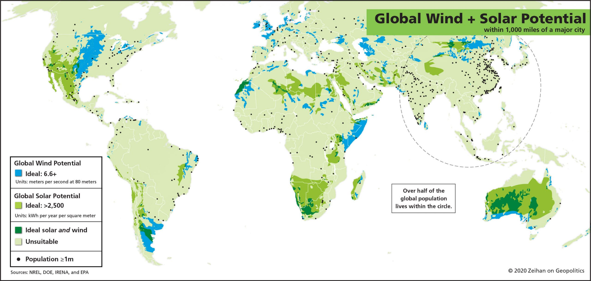

Somalia's High Wind Speeds and Large Coastline Position it as an Ideal Location for Wind Turbine Development
Wind turbines have become an increasingly popular source of renewable energy in recent years, and for good reason. These towering structures are able to harness the power of the wind to generate electricity, which can then be used to power homes, businesses, and entire communities. The benefits of wind turbines are numerous, and they are becoming an increasingly important tool in the fight against climate change and the need for sustainable energy. One of the biggest benefits of wind turbines is that they do not produce any emissions. Unlike traditional power sources such as coal and natural gas, wind turbines do not release any pollutants into the air. This makes them a much cleaner and more environmentally friendly option. Additionally, because wind is a renewable resource, wind turbines can provide a steady source of energy without depleting finite resources like fossil fuels. Wind turbines also have the potential to bring significant economic benefits. The installation and maintenance of wind turbines can create jobs, and the electricity generated by wind turbines can help to reduce dependence on fossil fuels and reduce energy costs. In addition, the use of wind turbines can help to reduce the need for expensive power transmission lines and distribution infrastructure, which can save money in the long run.
In Somalia, the benefits of wind turbines could be even more significant. The country has a large coastline and is located in an area with high wind speeds, making it an ideal location for wind energy development. In addition, Somalia has been struggling with a lack of access to electricity, particularly in rural areas. Wind turbines could help to bring electricity to these areas, improving living standards and supporting economic development. Overall, wind turbines are a powerful tool for addressing the challenges of climate change and energy security. They provide a clean, renewable source of energy, have economic benefits and in the case of Somalia, they can help to improve access to electricity and support economic development. However, it is important to note that wind energy is not a standalone solution and should be considered as part of a broader portfolio of renewable energy sources, including solar, hydro and geothermal. Additionally, wind turbines need proper infrastructure and maintenance to ensure their efficient operation and to ensure their long-term sustainability.
In conclusion, wind turbines are a valuable asset to society and economy, and the benefits they bring are undeniable. Investing in wind energy can not only help to reduce greenhouse gas emissions and dependence on fossil fuels, but also improve access to electricity and support economic growth, especially in countries like Somalia.